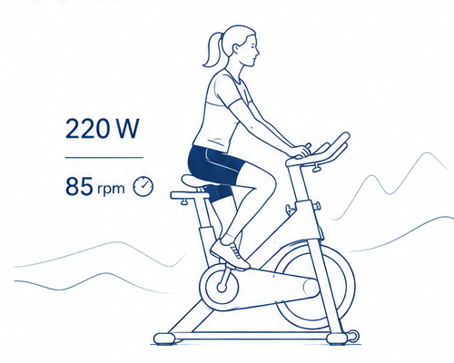
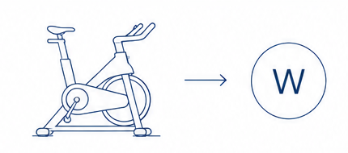
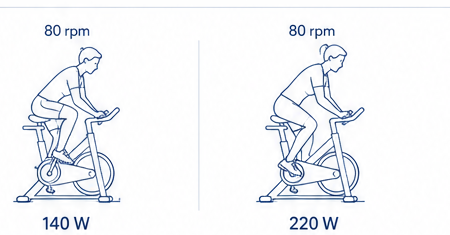
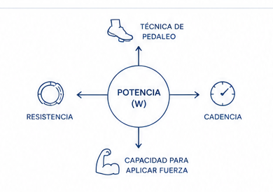
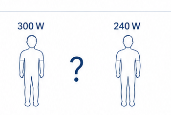

Capítulo 1
¿Qué son realmente los vatios y por qué cambian la forma de entender el ciclismo indoor?
Comprender qué representan los vatios es el primer paso para entender el entrenamiento por potencia.

1. ¿Qué mide realmente un vatio?
Un vatio mide la potencia, es decir, la cantidad de trabajo que eres capaz de realizar en un tiempo determinado.
Los vatios representan la potencia que desarrollas al pedalear en ese instante.
2. ¿Por qué dos personas generan vatios diferentes?
Imagina dos personas pedaleando a la misma cadencia. A simple vista parecen ir igual, pero están generando potencias muy diferentes.
La cadencia puede ser la misma, pero el trabajo realizado no.


3. ¿De qué depende la potencia que desarrollas?
La potencia no depende de un solo factor. Es el resultado de cómo interactúan todos ellos.
La potencia nunca depende de un solo factor. Es el resultado de cómo interactúan todos ellos.
4. Entonces…
¿Más vatios significa estar más en forma?
No necesariamente.
Una persona puede generar más potencia absoluta, pero eso no significa que tenga un mejor rendimiento.
Para interpretar correctamente esos datos necesitamos conocer otro concepto muy importante.
